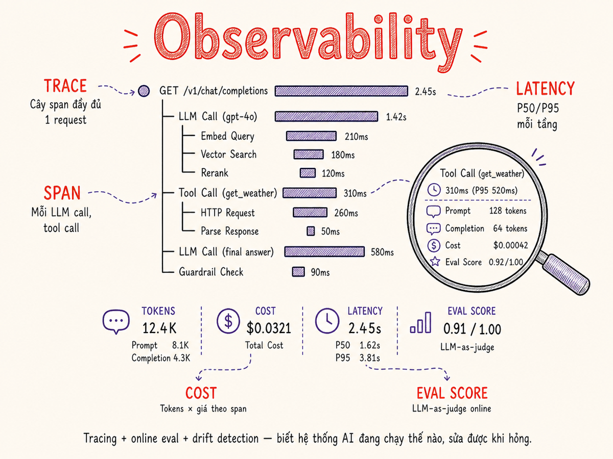

Observability & Evaluation in Production
LLM không có "error 500" rõ ràng — chúng thất bại một cách im lặng. Tracing, online evals, drift detection và user feedback loops là vũ khí duy nhất để biết hệ thống đang hoạt động tốt hay không.

11.1 Tại sao LLM observability khác monitoring truyền thống
Với một REST API bình thường, observability tương đối đơn giản: đo latency, đếm error 4xx/5xx, trace request qua các service. Hệ thống đúng khi không có exception và response đúng schema.
Với LLM, mọi thứ phức tạp hơn nhiều:
Non-deterministic
Cùng prompt, cùng model, có thể ra output khác nhau. Không có "đúng" hay "sai" tuyệt đối — chỉ có "tốt hơn" hay "tệ hơn".
Failure modes ẩn
Model có thể trả về HTTP 200, JSON hợp lệ, nhưng nội dung hallucination, sai thực tế, hoặc không phù hợp context. Traditional monitoring không catch được.
Multi-step complexity
Agent gọi nhiều LLM, tool calls, RAG queries. Một failure ở bước 3 trong pipeline 7 bước rất khó trace nếu không có span-level visibility.
Chất lượng = opinion
Không có ground truth cho most production queries. Cần LLM-as-judge hoặc human raters — cả hai đắt và có bias riêng.
Không thể chỉ dùng Prometheus/Grafana vì metric truyền thống không capture "content quality". Phải combine infrastructure metrics (latency, error rate, cost) với semantic metrics (eval score, relevance, faithfulness). Với agent systems, độ phức tạp tăng thêm một bậc: phải trace từng LLM call, tool call, và retrieval step riêng biệt — OTel GenAI SIG đã chuẩn hóa agent spans riêng cho mục đích này (cuối 2025).
11.2 Tracing — OpenTelemetry semantics cho LLM
OpenTelemetry (OTel) là tiêu chuẩn vendor-neutral cho distributed tracing. LLM ecosystem đã bổ sung semantic conventions riêng cho AI workloads thông qua GenAI SIG — bắt đầu từ tháng 4/2024 và đang trong quá trình stabilization (tính đến đầu 2026, phần lớn vẫn experimental). Một trace là cây các spans — mỗi span đại diện cho một operation.
Kể từ cuối 2025, OTel GenAI SIG đã bổ sung thêm agent spans riêng biệt:
gen_ai.agent.name, gen_ai.agent.description, cùng với events chuẩn hóa
để capture tool calls và tool results trong multi-step agent trace. Các framework lớn
(LangChain, LlamaIndex, AutoGen, OpenAI Agents SDK) đã ship emitter OTel-compliant trong Q1 2026.
Span attributes quan trọng nhất
# OpenTelemetry LLM semantic conventions
span.set_attributes({
# Mandatory
"gen_ai.system": "anthropic",
"gen_ai.request.model": "claude-3-5-sonnet-20241022",
"gen_ai.usage.input_tokens": 1240,
"gen_ai.usage.output_tokens": 312,
# Recommended
"gen_ai.request.temperature": 0.7,
"gen_ai.request.max_tokens": 2048,
"gen_ai.response.finish_reasons": ["end_turn"], # plural array, v1.27+
# Custom: cost & eval
"llm.cost.usd": 0.00186,
"llm.latency.ttft_ms": 312,
"llm.eval.relevance": 0.87,
"llm.eval.faithfulness": 0.92,
})11.3 Tools — Tooling landscape
Có nhiều tools chuyên biệt cho LLM observability, từ open-source đến SaaS. Mỗi tool có trade-off riêng:
| Tool | Type | Điểm mạnh | Điểm yếu | Pricing |
|---|---|---|---|---|
| Langfuse | Open-source / SaaS | Self-host được, eval + annotation queue + prompt versioning đã open-source MIT (6/2025). Được ClickHouse mua lại 1/2026, vẫn duy trì MIT và độc lập. | ClickHouse acquisition tạo rủi ro roadmap dài hạn | Free self-host; cloud có free tier |
| Braintrust | SaaS | Eval framework mạnh, dataset versioning, CI integration tốt, multi-turn evals. Gọi vốn $80M Series B (2/2026, định giá $800M). Free tier 1M spans/tháng. | Không self-host, tất cả cloud | Free 1M spans; $50+/tháng cho team |
| Arize Phoenix | Open-source | Tracing cực tốt, OTel-native, đẹp cho debugging agent traces. Arize AI thương mại có drift detection mạnh từ ML monitoring. | Cần tự setup infra cho Phoenix; Arize enterprise lock-in | MIT license, free (Phoenix); Enterprise pricing (Arize AI) |
| LangSmith | SaaS (LangChain) | Tích hợp sâu với LangChain/LangGraph, tracing automatic, Agent Sandboxes (3/2026), multi-turn evals, GitHub CI integration | Lock-in LangChain ecosystem | Freemium |
| Helicone | SaaS proxy | Zero-code: chỉ đổi base URL, auto log mọi thứ | Tất cả request đi qua proxy của họ | Free tier, $20+/tháng |
| Logfire (Pydantic) | SaaS / Self-host | Built trên OTel, AI-native từ team Pydantic, tích hợp tốt với PydanticAI, dashboard chuẩn out-of-the-box, full-stack observability (không chỉ LLM) | Còn khá mới, ecosystem nhỏ hơn | Free tier; trả phí theo usage |
| Custom OTel | Self-built | Full control, tích hợp với Grafana/Jaeger/Datadog existing stack | Cần effort build & maintain | Infrastructure cost only |
Nếu bắt đầu: dùng Langfuse self-hosted — vẫn MIT sau khi ClickHouse mua lại (1/2026), flexible, không vendor lock-in. Nếu dùng PydanticAI hoặc cần full-stack OTel: Logfire (Pydantic) tích hợp tự nhiên nhất. Nếu đã có Grafana/Datadog stack: add Arize Phoenix với OTel export. Nếu eval là ưu tiên hàng đầu: Braintrust (free 1M spans/tháng, CI integration mạnh). Nếu team nhỏ, không muốn ops: Helicone setup trong 5 phút.
11.4 Logging strategy
Log toàn bộ prompt và completion là công cụ debugging mạnh nhất — nhưng cũng tốn kém và rủi ro privacy. Cần chiến lược cân bằng giữa observability và cost/compliance.
Cái gì nên log?
- Luôn luôn: token counts, latency, cost, model, finish reason, trace IDs
- Thường xuyên (sampled): full prompt + completion — với PII filtering
- Khi cần debug: raw tool call inputs/outputs, intermediate chain steps
- Không bao giờ: raw PII (tên, email, CMND, thông tin y tế), secrets, API keys trong prompt
PII Filtering trước khi log
import re
PII_PATTERNS = {
"email": r'\b[A-Za-z0-9._%+-]+@[A-Za-z0-9.-]+\.[A-Z|a-z]{2,}\b',
"phone_vn": r'\b(0|\+84)[0-9]{9,10}\b',
"cccd": r'\b\d{9,12}\b',
}
def redact_pii(text: str) -> str:
for label, pattern in PII_PATTERNS.items():
text = re.sub(pattern, f"[{label.upper()}_REDACTED]", text)
return textSampling strategy
Log 100% requests quá tốn kém với scale lớn. Dùng tiered sampling:
- 100% cho errors và low eval score (<0.5)
- 10% cho normal requests (random sampling)
- 100% cho requests từ power users hoặc requests với user feedback
- 100% cho requests trong A/B test windows
Một request Claude với 4k token in + 1k token out = ~5k token = ~5k characters = ~5 KB. 100k request/ngày × 5 KB = 500 MB/ngày log. Với 90 ngày retention: 45 GB storage. Nhân thêm replication và indexing → chi phí S3/BigQuery không nhỏ. Cân nhắc sampling + compression.
11.5 Online Evaluation — score production traffic
Online eval là đánh giá quality trên traffic thực, theo thời gian thực hoặc near-real-time. Không như offline eval (chạy trên dataset cố định), online eval phản ánh distribution thực của user queries.
LLM-as-Judge pattern
EVAL_PROMPT = """Bạn là evaluator cho một AI assistant.
Đánh giá response sau theo thang 1-5:
User query: {query}
Assistant response: {response}
Context (if RAG): {context}
Chấm điểm RELEVANCE (1-5): response có liên quan đến query không?
Chấm điểm FAITHFULNESS (1-5): response có consistent với context không? (N/A nếu không có context)
Chấm điểm HELPFULNESS (1-5): response có hữu ích cho user không?
Output JSON: {{"relevance": X, "faithfulness": X, "helpfulness": X, "reasoning": "..."}}
"""
async def eval_sample(query, response, context=None, sample_rate=0.1):
if random.random() > sample_rate:
return # skip based on sampling rate
judge_response = await cheap_llm.complete(
EVAL_PROMPT.format(query=query, response=response, context=context),
model="claude-3-haiku-20240307" # dùng cheap model cho judge
)
scores = json.loads(judge_response)
metrics.record("llm.eval", scores)
if scores["relevance"] < 3:
alert.send(f"Low relevance score: {scores}")LLM judges có xu hướng favor response dài hơn, và model của nhà nào thì bias về phía đó. Luôn validate judge trên golden dataset (mục tiêu đạt 75–90% agreement với human labels) trước khi scale lên production traffic. Dùng 2-3 judge models khác nhau và lấy majority vote khi quan trọng. Quan trọng: cùng một evaluator nên chạy cả trong development lẫn production để scores có thể so sánh trực tiếp.
11.6 Drift Detection
Drift xảy ra khi hành vi của hệ thống thay đổi theo thời gian — có thể do model update, distribution shift của user queries, hay thay đổi prompt. 3 loại drift cần theo dõi:
1. Input distribution drift & embedding drift
Queries từ users thay đổi về topic, language, độ phức tạp. Track bằng embedding clustering (so sánh cluster distribution giữa baseline và snapshot mới — thay đổi lớn trong tỷ lệ cluster báo hiệu user queries đang cover semantic area mới). Dùng UMAP hoặc t-SNE để project embedding 2D và visual inspect khi cluster mới xuất hiện. Ngoài ra, theo dõi retrieval hit rate bằng probe set cố định: hit rate giảm liên tục là dấu hiệu retrieval drift trong RAG index.
2. Output quality drift
Eval score trung bình giảm theo thời gian. Thường xảy ra khi: provider update model (silent upgrade), prompt bị thay đổi không có ý định, hay data trong RAG index stale/corrupted. Cần alert khi rolling 7-day eval score drops >10%.
3. Cost spike detection
Cost/request tăng đột biến thường do: prompt injection khiến output dài bất thường, bug trong code khiến context window bị nhồi, hay model upgrade lên tier đắt hơn.
# Anomaly detection đơn giản cho cost
def check_cost_anomaly(hourly_costs: list[float]) -> bool:
mean = np.mean(hourly_costs[:-1]) # historical mean
std = np.std(hourly_costs[:-1])
current = hourly_costs[-1]
z_score = (current - mean) / (std + 1e-9)
return z_score > 3.0 # 3-sigma threshold → alert11.7 User Feedback Loops
Feedback từ users là signal quality quý giá nhất — nhưng cũng khó thu thập. Có 3 loại feedback signal:
Thumbs up/down là cách phổ biến nhất — friction thấp, data sạch. Nhưng response rate thường chỉ 2-5%.
Star rating (1-5) cho nhiều granularity hơn nhưng inconsistent giữa users.
Comment box sau bad rating: giá trị cao nhưng open-ended, cần phân tích định tính.
Best practice: chỉ hỏi khi user đã đọc response xong (delay 3-5 giây), không block UX.
Implicit signals không cần user action nhưng cần inference về intent:
- Copy action: user copy response → likely positive signal
- Retry/Regenerate: user regenerate cùng prompt → strong negative signal
- Follow-up question mang tính sửa lỗi: "không, ý tôi là…" → negative
- Session continuation: user tiếp tục chat dài → positive engagement
- Rage click / close ngay lập tức: negative engagement
Vòng lặp cải thiện từ feedback:
- Collect feedback → tag vào trace trong Langfuse/Braintrust
- Filter bad-rated examples → add vào eval dataset
- Phân tích pattern: loại query nào thường nhận bad feedback?
- Fix prompt hoặc RAG cho pattern đó
- Chạy offline eval trên bad-rated dataset → verify improvement
- Deploy và monitor online eval score
11.8 Dashboards & SLOs cho LLM
SLO (Service Level Objective) là cam kết về chất lượng dịch vụ đo được. Với LLM, cần define cả infrastructure SLOs và semantic SLOs:
SLOs khuyến nghị cho LLM API
| Metric | Target điển hình | Alert threshold |
|---|---|---|
| P50 TTFT | <500ms | >1s trong 5 phút |
| P95 TTFT | <2s | >4s trong 5 phút |
| HTTP error rate | <0.5% | >2% trong 5 phút |
| Eval score (avg) | >4.0/5 | <3.5 trong 1 giờ |
| Cost/request | Theo budget | >3x baseline trong 15 phút |
| Token/request (avg) | Theo use case | >5x baseline (injection signal) |
11.9 Debugging với Traces
Traces là công cụ chính để debug khi hệ thống hoạt động kém. Flow điển hình:
- Alert fires: eval score drops dưới SLO threshold lúc 14:30
- Filter traces: Langfuse → filter by
eval.score < 3trong khoảng 14:00-15:00 - Identify pattern: 80% bad traces có cùng system prompt version? Cùng loại query? Cùng user segment?
- Drill into span: xem exact prompt + completion của một trace cụ thể
- Hypothesis: system prompt mới deploy lúc 14:15 thay đổi behavior → rollback hoặc fix
- Verify: sau fix, monitor eval score recover
Mỗi user request phải có một trace_id xuyên suốt từ frontend → API → LLM call.
Khi user report bug ("AI trả lời sai lúc 3pm"), bạn cần trace ID để tìm exact conversation.
Log trace ID trong UI (ẩn với user, nhưng accessible qua browser devtools hay support ticket).
Tóm tắt
- LLM failure ẩn: HTTP 200 không có nghĩa là output đúng — cần semantic observability bên cạnh infrastructure metrics.
- Tracing đầy đủ: mọi LLM call phải có span với token count, latency, cost, model. Dùng OpenTelemetry semantic conventions.
- Tool chọn: Langfuse (self-host, MIT — acquired by ClickHouse 1/2026), Braintrust (eval-heavy, $80M Series B 2/2026), Arize Phoenix (OTel-native tracing), Logfire (PydanticAI stack), Helicone (zero-code).
- Logging: log có chọn lọc, filter PII, sample 10% normal + 100% errors và bad ratings.
- Online eval: sample 5-10% traffic, score với cheap LLM judge, alert khi drops.
- Drift: monitor input distribution (embedding cluster shift, UMAP visualization, retrieval probe hit rate), eval score trend, và cost/request — 3 leading indicators của quality degradation.
- SLOs: define ít nhất TTFT P95, error rate, eval score avg, cost/request — và set alert thresholds.